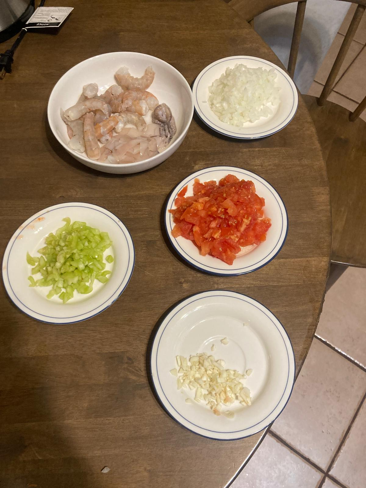
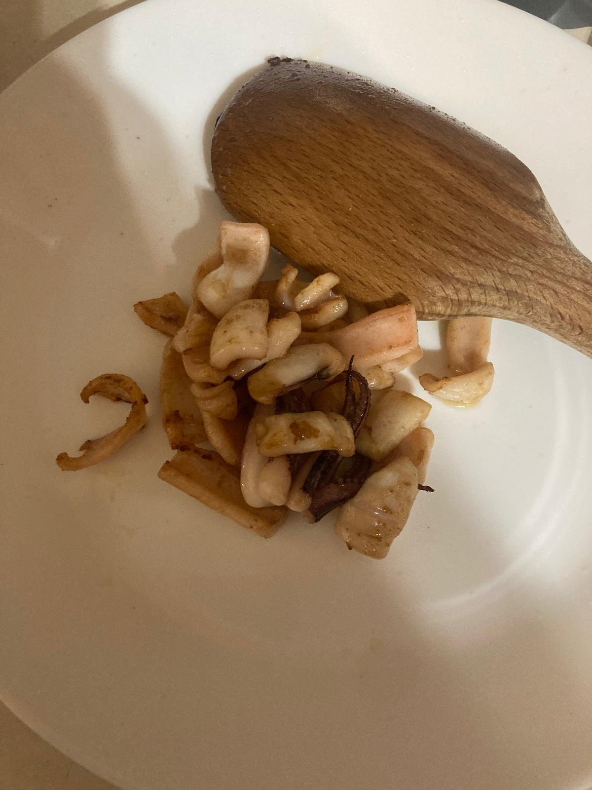
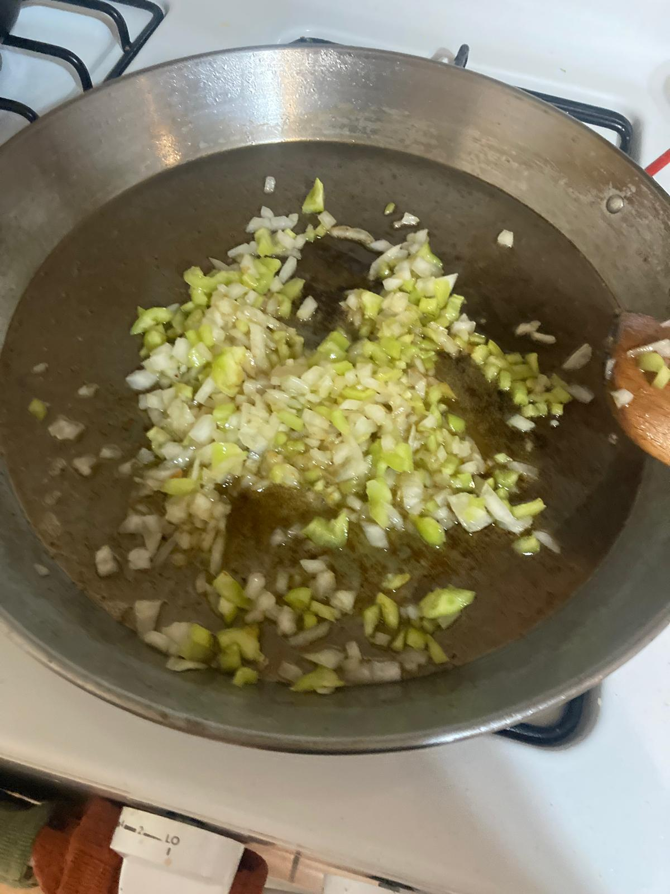
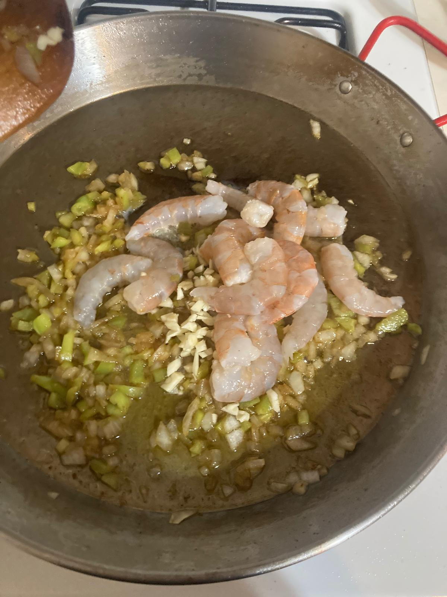
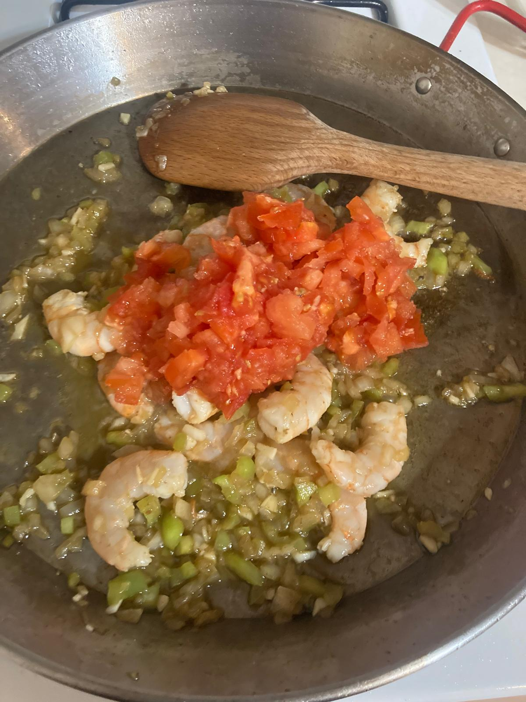
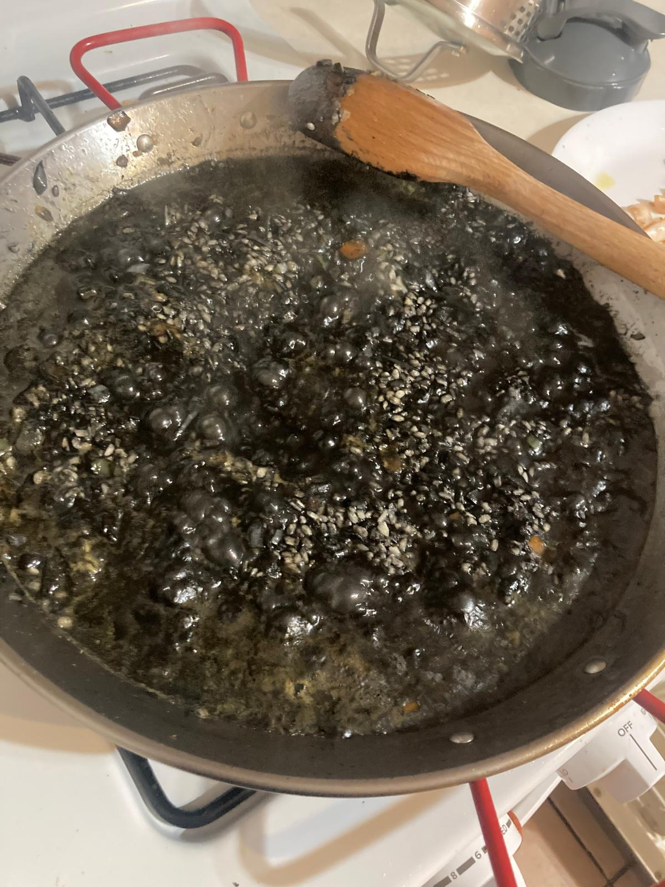
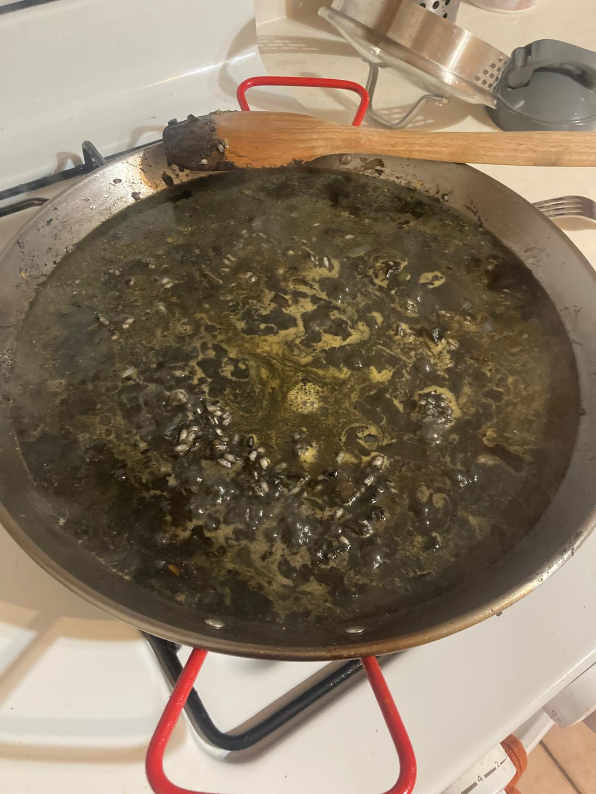
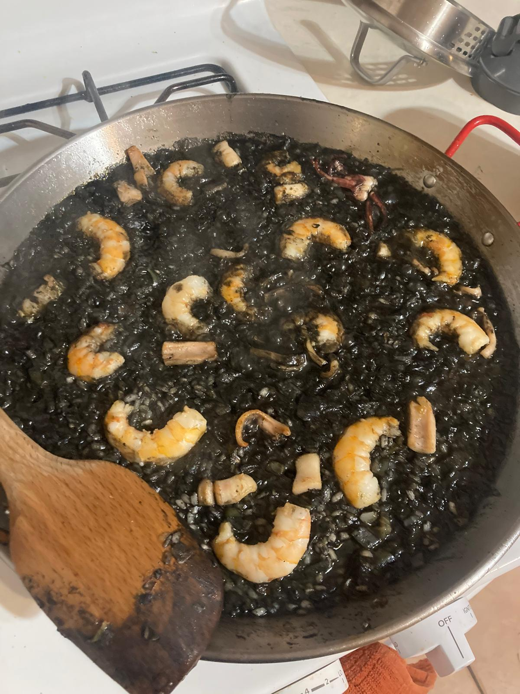

- Picamos el ajo, pimiento, tomate y cebolla en trozos muy finos. Pelamos las gambas y limpiamos y cortamos en trozos pequeños la sepia.
- Con las cabezas de las gambas, preparamos un fumet con el que vamos a cocinar el arroz.
- En la paellera, echamos un chorro de aceite de oliva y salteamos la sepia 5 minutos.
- En la paellera, echamos un chorro de aceite de oliva y salteamos la sepia 5 minutos. Después, añadimos le cebolla y el pimiento verde, removemos y dejamos que se sofrían otros 5 minutos.
- Añadimos el ajo y las gambas, rehogamos unos minutos e introducimos el tomate. Salamos ligeramente y cocinamos todo 5 minutos.
- Retiramos las gambas y reservamos.
- Diluimos la tinta en un vaso con 2 cucharadas de agua caliente y lo añadimos a la paellera. Incorporamos el arroz y sofreimos durante 5 minutos sin parar de remover. Añadimos el vino blanco y dejamos que se evapore.
- Cubrimos el arroz con la mitad del caldo y cocinamos a fuego alto durante 10 minutos. Añadimos el resto del caldo, bajamos el fuego, y cocinamos a fuego medio otros 7 minutos.
- Cuando falten 2 minutos, añadimos las gambas y subimos el fuego para que se termine de evaporar el caldo. Antes de servir, dejamos reposar 5 minutos cubriendo con un paño limpio.







